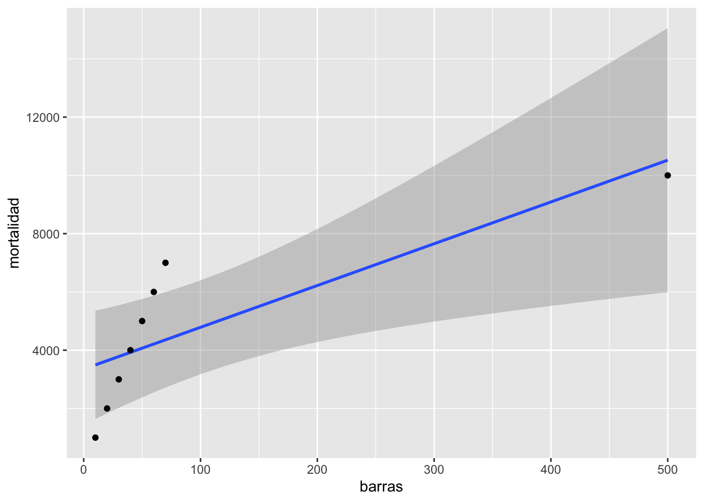
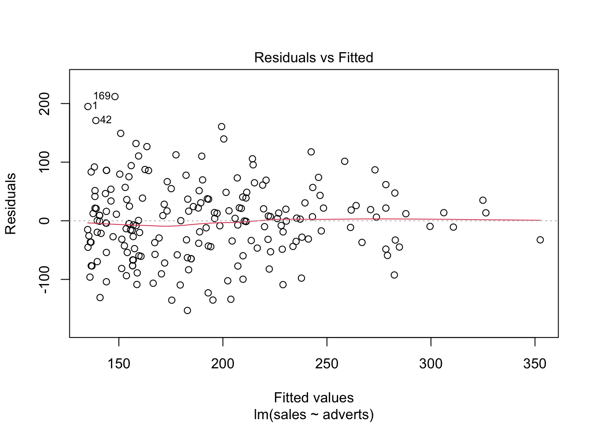
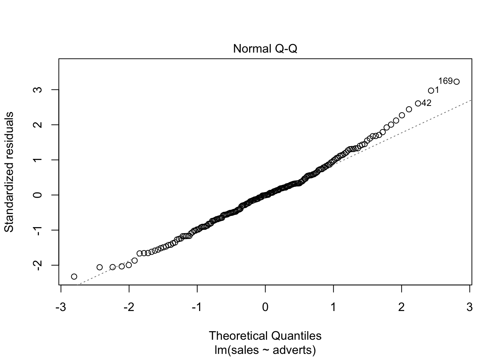

Regresión Lineal


Fecha de la ultima revisión
## [1] "2020-10-21"Activar las librerias, averiguar que TIENE instalado estos paquetes
if (!require("pacman")) install.packages("pacman")
pacman::p_load(QuantPsyc, car, tidyverse, sjPlot)
library(QuantPsyc)
library(car)
library(ggplot2)
library(tidyverse)
library(sjPlot)Regresión Lineal
La regresión lineal es el modelo básico de evaluar si hay una relación lineal o sea una linea recta entre dos variable. Esta relación entre las variables puedes ser positiva o negativa. Hay otro tipos de regresión, que incluye regresión no lineal tal como cuadrática \(x^2\) o cúbica \(x^3\), logarítmica \(log(x)\) entre muchas otras alternativas. Estas alternativas se verán en el modulo de regresión no lineal.
Aquí estaremos evaluando solamente la regresión lineal
Vemos un ejemplo ficticio
Los datos son de unos barrios un país ficticio donde se observa el números de barres en un bario y la cantidad de asesinados en este barrio. Los datos se encuentran en sección de datos debajo
##
## ── Column specification ────────────────────────────────────────────────────────
## cols(
## pubs = col_double(),
## mortality = col_double()
## )# Cambiamos los nombres de las columnas
pubs=pubs%>%
dplyr::rename(barres=pubs, mortalidad=mortality) # cambiamos los nombres de las columnas al español.
pubs## # A tibble: 8 x 2
## barres mortalidad
## <dbl> <dbl>
## 1 10 1000
## 2 20 2000
## 3 30 3000
## 4 40 4000
## 5 50 5000
## 6 60 6000
## 7 70 7000
## 8 500 10000la función lm()
Como hacer un regresión lineal (Linear Regression) simple, usando la función lm(), para “linear model”= modelo lineal. Una regresión necesita dos variable continuas (vea el módulo de correlación). Es importante que estas variable tenga una distribución normales. La diferencia entre una correlación y una regresión es que la primera es un análisis que describe el patrón y en la segunda es que no solamente describe el patrón pero hace predicción sobre la relación entre las variables. Usando la regresión uno calcula tambien una linea que describe la relación entre las variables. Esta variable se puede describe como \(y=m_x+b\) donde la m representa la pendiente y la b representa el intercepto. También lo pueden ver en libros de la siguiente forma \(y=\alpha+\beta_x\) donde la \(\beta\) beta representa la pendiente y la \(\alpha\) el intercepto.
La función en R de regresión lineal es lm() se compone de lm(y~x, data= “df”). Nota la tilde ~. Hay dos pruebas la primera para determinar si \(\alpha\) es distinto de cero. La hipótesis nula es
- Ho: el intercepto \(\alpha\) es igual a cero
- Ha: el intercepto, \(\alpha\) no es igual a cero. Entonces el punto donde la linea intercepta el cero puede estar mayor de o menor de cero.
La segunda hipótesis nula es que la pendiente es diferente de cero, esto quiere decir que la pendiente no sugiere/apoya un patrón de aumentar y disminuir entre las dos variables.
- Ho: la pendiente \(\beta\) es igual a cero
- Ha: la pendiente, \(\alpha\) no es igual a cero. Entonces la relación entre las dos variables es o positiva o negativa.
Ahora evaluamos los resultados de la regresión entre el número de barres en un vecindarios y la mortalidad en este mismo sector. Se observa que los coeficientes de la linea son \(y=3352+14.3*x\). Entonce el intercepto en cero comienza en 3352 fatalidades y por cada bar suplementario hay 14.3 más fatalidad. Esto significa que si no hay barres la x=0, la cantidad de fatalidades esperada es de 3352.
Ahora para determinar si estos valores son significativo hay que evaluar el valor de p en cada linea. La hipótesis nula del intercepto tiene un valor de p =0.005, que sugiere que se debería rechazar la hipótesis nula, y por consecuencia aceptamos la hipótesis alterna, que el intercepto no es igual a cero. La pendiente tiene un valor de p=0.015 y también se rechaza la hipótesis nula, esto sugiere que a medida que aumenta la cantidad de barres aumenta la cantidad de fatalidades, por cada bar extra esperamos 14.3 fatalidades suplementaria.
pubReg <- lm(mortalidad~barres, data = pubs)
# summary(pubReg) # Si no se acuerda de la función que sigue use la siguiente función (que es más sencilla)
tab_model(
pubReg,show.df = TRUE,
CSS = list(
css.depvarhead = 'color: red;',
css.centeralign = 'text-align: left;',
css.firsttablecol = 'font-weight: bold;',
css.summary = 'color: blue;'
)
)| mortalidad | ||||
|---|---|---|---|---|
| Predictors | Estimates | CI | p | df |
| (Intercept) | 3351.96 | 1440.34 – 5263.57 | 0.005 | 6.00 |
| barres | 14.34 | 3.82 – 24.86 | 0.016 | 6.00 |
| Observations | 8 | |||
| R2 / R2 adjusted | 0.649 / 0.591 | |||
Visualización de la regresión
Se observa que hay un aumento en fatalidades con aumento en el número de barres. Pero nota el valor a la derecha que parece ser muy atípico comparado a los otros.
## `geom_smooth()` using formula 'y ~ x'
El impacto de valores atípico
En cierta ocasiones valores fuera de lo normal pueden hacer grandes cambios en el resultado, en este caso el resultado de la regresión. ¿Cual es el efecto del valor grande? Removemos ese valor del archivo de datos y reevaluamos el modelo (la regresión lineal). Nota que ahora el modelo es sumamente diferente \(y=-163.7+103.2*x\). ¿Ahora se rechaza las dos hipótesis?
pubsnew <- pubs[ which(pubs$barres<80), ] # remover el valor grande
pubsnew=pubsnew %>%
add_row(barres = 4, mortalidad = 0) # Añadiendo un par de valores
pubRegNew <- lm(mortalidad~barres, data = pubsnew)
#summary(pubRegNew)
tab_model(
pubRegNew,show.df = TRUE,
CSS = list(
css.depvarhead = 'color: red;',
css.centeralign = 'text-align: left;',
css.firsttablecol = 'font-weight: bold;',
css.summary = 'color: blue;'
)
)| mortalidad | ||||
|---|---|---|---|---|
| Predictors | Estimates | CI | p | df |
| (Intercept) | -163.70 | -374.14 – 46.73 | 0.106 | 6.00 |
| barres | 103.20 | 98.18 – 108.23 | <0.001 | 6.00 |
| Observations | 8 | |||
| R2 / R2 adjusted | 0.998 / 0.997 | |||
## `geom_smooth()` using formula 'y ~ x'
La venta de discos de música
Ahora evaluamos un conjunto de datos más complejo y más realista similar a los que uno encontraría en un estudio de en medicina, sociología o ecológica.
Los datos representa la cantidad de dinero dedicado a la promoción de diferentes CD’s de una compañía de música y la cantidad de CD (CD/downloads) vendido. El la primera linea se observa la cantidad de libras esterlina, £ (UK) dedicado a la promoción del álbum de música, en la primera linea vemos que se gasto £10,256, y después la cantidad de CD vendido fue 330. Tenemos información sobre 200 album diferentes.
library(readr)
Album_Sales_1_new <- read_csv("~/Google Drive/Biometry/Biometria 2017/Data_FILES/Album_Sales_1_new.csv")##
## ── Column specification ────────────────────────────────────────────────────────
## cols(
## Count = col_logical(),
## adverts = col_double(),
## sales = col_double()
## )## # A tibble: 6 x 3
## Count adverts sales
## <lgl> <dbl> <dbl>
## 1 NA 10.3 330
## 2 NA 986. 120
## 3 NA 1446. 360
## 4 NA 1188. 270
## 5 NA 575. 220
## 6 NA 569. 170## [1] 200Comenzamos con hacer un gráfico entre las dos variables. Nota que en la parte de geom_smooth(), tiene que incluir method=lm, esto significa que el método de construir la linea usara la regresión lineal. Se añade a la función lineal \(\epsilon\) que representa los errores de los valores al comparar con la linea que representa el mejor modelo.
\[Y_{ i }=\beta _{ 0 }+\beta _{ 1 }X_{ i }+\epsilon _{ i }\] Recuerda que \(\beta _{ 0 }\) es el intercepto y el \(\beta _{ 1 }X_{ i }\) es la pendiente. El área sombreada es el área de 95 de intervalo de confianza. Esto quiere decir que la mejor linea, intercepto y pendiente podría variar en este rango si repetimos el experimento. Nota aquí todas las alternativas, añadí las dos pendientes extremas, con una pendiente mayor (roja) y una menor (violeta). Cada punto representa la venta de un CD con su correspondiente cantidad dedicada a la promoción. Los \(epsilon\) seria la diferencia entre la mejor linea y el valor original, esto se llama también los residuales.
library(ggplot2)
ggplot(Album_Sales_1_new,aes(x=adverts, y=sales))+
geom_smooth(method=lm, se = TRUE)+
geom_point()+
geom_segment(aes(x=0, y=120, xend=2250, yend=380), colour="red")+
geom_segment(aes(x=0, y=150, xend=2250, yend=320), colour="purple")## `geom_smooth()` using formula 'y ~ x'
El modelo lineal con la función lm(). ¿Como interpretas los coeficientes y si estos son significativos, si se rechaza la hipótesis nula?
library(sjPlot)
model1=lm(sales~adverts, Album_Sales_1_new)
#summary(model1)
tab_model(
model1,show.df = TRUE,
CSS = list(
css.depvarhead = 'color: red;',
css.centeralign = 'text-align: left;',
css.firsttablecol = 'font-weight: bold;',
css.summary = 'color: blue;'
)
)| sales | ||||
|---|---|---|---|---|
| Predictors | Estimates | CI | p | df |
| (Intercept) | 134.14 | 119.28 – 149.00 | <0.001 | 198.00 |
| adverts | 0.10 | 0.08 – 0.12 | <0.001 | 198.00 |
| Observations | 200 | |||
| R2 / R2 adjusted | 0.335 / 0.331 | |||
Supuestos de la regresión lineal
Igualdad de varianza: En el primer gráfico evaluar si los datos están distribuido más o menos igual. Determinar que no un más variación un área del gráfico comparando a otra área. Se observa que los datos están más o menos distribuido igualmente por encima y debajo de la linea cero atreves de la distribción de los valores “Fitted”, que son los valores predicho.
Normalidad de los datos, evaluar el gráfico #2. Con el gráfico de qqplot vemos que los datos siguen el modelo nulo (la linea entrecortada) casi perfectamente, Entonces uno puede asumir que los datos cumple con una distribución normal. Pero nota que los datos en el cuartil superior no estan sobre la linea.
Evaluar si hay datos sesgados (atípicos) que influencia los resultados, evaluar el gráfico #3. Si los valores estandarizados de “Student” son mayor de 3, esto sugiere que hay datos atípicos.
En el cuarto gráfico evaluar si hay valores que tienen mucho peso si se incluyen o no en el análisis, evaluar el gráfico #4, Estos van a ser identificado. Los valores que hay preocuparse son los que están por encima o debajo la linea entrecortada de -0.5 y 0.5. En el presente gráfico hay tres valores que hay que evaluar (1, 42, 169), estos valores se tiene que asegurar que son correctos. Siempre es bueno remover los valores sesgados y rehacer el análisis para observar cuan diferente son los resultas.
plot(model1) # Evaluar los supuestos, 1. Igualdad de varianza, 2. Normalidad, 4. Datos sesgados (Cook's Distance)

Cook’s Distance
Continuando con el tema de evaluar si hay valores que podrían influenciar mucho el análisis, podemos utilizar una de las herramientas para evaluar el peso de cada valor sobre una regresión lineal basada en métodos de los mínimos cuadrados, llamada la Distancia de Cook. Este análisis fue desarrollado por R. Dennis Cook en 1977 y tiene como objetivo evaluar cada valor en la matriz de datos y el peso que tiene sobre el resultado (cuando esté este incluido o no en el análisis). Produce un índice para cada uno de los valores sobre el resultado basándose en los valores residuales que se llama la Distancia de Cook. Por lo tanto, ese análisis evalúa el impacto relativo de cada valor sobre el índice. Infortunadamente no está claro cuál es el valor crítico; o sea, qué valor nos puede indicar que se tiene exceso de peso sobre los resultados. Las dos principales sugerencias son: Distancia de Cook, Di, es mayor a 1 (sugerido por R. Dennis Cook Cook mismo en 1982); y que la Di > 4/n, donde n es el número de observaciones (Bollen et al. 1990).
Para hacer una ilustración, continuaremos con el modelo modelflower usando los valores calculados en el modelo anterior. El gráfico se construirá utilizando la opción seq_along, para que los valores en el eje de X se basen en la secuencia de datos en el archivo y los valores en el eje de Y se basen en los valores de la Distancia de Cook. En este caso, vemos que todos los valores están muy por debajo de 1, lo que sugiere que ninguno de los valores individuales influenciaría mucho en los resultados aún si estos fuesen excluidos. Si utilizáramos la segunda alternativa de Di > 4/n, entonces nos deberían preocupar los 8 valores de Di que son mayores a 4/181=0.022, donde 181 es la cantidad de datos en el archivo. Si se considera esta segunda alternativa, sería necesario evaluar 8 valores en la tabla de datos que pudiesen ser sospechosos (los valores encima de la línea roja). Note que no es que están incorrectos; más bien, este resultado es solamente una herramienta para evaluar valores que parecen tener un impacto considerable sobre los resultados.
A continuación se demuestra como añadir
- los valores de “cook.distance” a su archivo
- Añadir una columna de “secuencia” de los datos
- Crear una gráfica de las distancia de Cook.
- Determinar si hay valores de Cook’s \(D_i\) mayor de 1, o 4/n.
## [1] 0.02Album_Sales_1_new$cooks.distance<-cooks.distance(model1)
Album_Sales_1_new$sequence=c(1:200)
ggplot(Album_Sales_1_new, aes(sequence, cooks.distance))+
geom_point()+
geom_hline(aes(yintercept=4/length(Album_Sales_1_new$adverts), colour="red"))
Pasos para hacer un análisis de regresión lineal
Paso 1
Primer paso, construir su modelo y evaluar los coeficientes.
El resultado: El coeficiente (intercepto) y la pendiente del modelo
Paso 2
Evaluar si los coeficientes son diferentes de cero.
La primera hipótesis, Determinar si el intercepto es igual a cero. Mira el valor de p, Pr(>|t|), determinar si el valor es menor de 0.05, si lo es se rechaza la Ho y por consecuencia tenemos confianza que el intercepto no incluye cero.
La segunda hipótesis nula Deteminar si la pendiente es igual a cero. Mira el valor de p, Pr(>|t|), como el valor es menor de p=0.05, se rechaza la Ho y por consecuencia tenemos confianza que la pendiente no incluye cero.
Paso 3
– Evaluar si los datos cumple con los supuestos. - Igualdad de varianza, usa la gráfica de residuales - Normalidad, qqplot - Valores sesgados, la prueba de Cook’s
##
## Call:
## lm(formula = sales ~ adverts, data = Album_Sales_1_new)
##
## Residuals:
## Min 1Q Median 3Q Max
## -152.949 -43.796 -0.393 37.040 211.866
##
## Coefficients:
## Estimate Std. Error t value Pr(>|t|)
## (Intercept) 1.341e+02 7.537e+00 17.799 <2e-16 ***
## adverts 9.612e-02 9.632e-03 9.979 <2e-16 ***
## ---
## Signif. codes: 0 '***' 0.001 '**' 0.01 '*' 0.05 '.' 0.1 ' ' 1
##
## Residual standard error: 65.99 on 198 degrees of freedom
## Multiple R-squared: 0.3346, Adjusted R-squared: 0.3313
## F-statistic: 99.59 on 1 and 198 DF, p-value: < 2.2e-16tab_model(
advertizingReg,show.df = TRUE,
CSS = list(
css.depvarhead = 'color: red;',
css.centeralign = 'text-align: left;',
css.firsttablecol = 'font-weight: bold;',
css.summary = 'color: blue;'
)
)| sales | ||||
|---|---|---|---|---|
| Predictors | Estimates | CI | p | df |
| (Intercept) | 134.14 | 119.28 – 149.00 | <0.001 | 198.00 |
| adverts | 0.10 | 0.08 – 0.12 | <0.001 | 198.00 |
| Observations | 200 | |||
| R2 / R2 adjusted | 0.335 / 0.331 | |||
Alternativa para Gráficar los residuales
Graficar los residuales
Si el supuesto de igualdad de varianza se cumple lo que observaremos es que la distribución de los residuales luce más o menos uniforme alrededor del promedio de los residuales (el cero). Hay aproximadamente igual cantidad de valores mayor a cero (por encima de la línea en azul) y menor a cero (por debajo de la línea en azul) que están distribuidos a través de la variable en el eje de X, o valores estimados. En adición que los residuales (negativos o positivos) no son limitado a sub grupos de los valores estimados (en la X).
# "model1", nota que este no es un data frame pero un modelo
# La figura principal
ggplot(Album_Sales_1_new, aes(x=adverts, y=sales))+
geom_smooth(method=lm, se = TRUE)+
geom_point()## `geom_smooth()` using formula 'y ~ x'
# Graficando los residuales con ggplot2
ggplot(model1, aes(x=.fitted, y=.resid))+
geom_point()+
geom_smooth(method=lm)## `geom_smooth()` using formula 'y ~ x'
r#437d66
EJERCICIO 1
El conjunto de datos ToothGrowth del paquete datasets contiene el resultado de un experimento que estudia el efecto de la vitamina C en el crecimiento de los dientes en 60 cobayas (Guinea Pigs). Cada animal recibió uno de los tres niveles de dosis de vitamina C (0,5, 1 y 2 mg / día) mediante uno de los dos métodos de administración (jugo de naranja o ácido ascórbico (una forma de vitamina C y codificado como VC).
Usando los siguiente datos haga un analisis completo de regresión lineal.
## len supp dose
## 1 4.2 VC 0.5
## 2 11.5 VC 0.5
## 3 7.3 VC 0.5
## 4 5.8 VC 0.5
## 5 6.4 VC 0.5
## 6 10.0 VC 0.5
“Activities reported in this website was supported by the National Institute Of General Medical Sciences of the National Institutes of Health under Award Number R25GM121270. The content is solely the responsibility of the authors and does not necessarily represent the official views of the National Institutes of Health.”